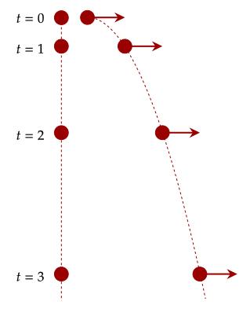
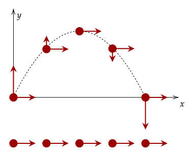
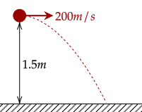
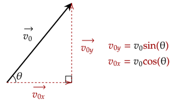
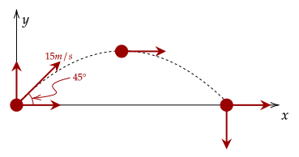
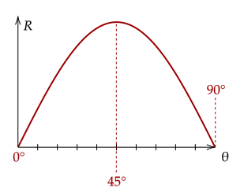

One common type of two-dimensional motion is projectile motion, where a particle (named a projectile) moves in the air.
While there are two types of projectile motion, we choose to condense them into one general case. Projectile motion is the motion of a particle with an initial velocity, afterwards being only under
As we've seen, the motion of an object in two-dimensions can be separated into two parts; the x-component and the y-component. This can greatly simplify our approach to projectiles.

Since we can break down the velocity into its two components, we first analyze the horizontal component. Notice how there is no acceleration in the horizontal direction, thus the velocity of the horizontal component is constant.
The vertical component however has an acceleration, which is the gravitational acceleration. Since this is the only acceleration which acts upon the projectile, we can use the equations we made for free falling objects on it.

Analyzing the trajectory, we can see that the vertical component starts as positive (throwing the particle up) and becomes zero at the apex, then slowly goes negative. Also note that it is symmetric; the vertical velocity's magnitude is the same as the impact (the end) and at the initial hit.
Right now, it is quite awkward to talk about some of the parts of projectile motion, such as how long the projectile flys or how far it reached. Thus, we define two new quantities.
Range () - the distance from initial hit to the point of impact
Question 1
(LSM CQ4.7) Answer the following questions for projectile motion on level ground assuming negligible air resistance, with the initial angle being neither 0° nor 90°.(a) Is the velocity ever zero?
(b) When is the velocity a minimum? A maximum?
(c) Can the velocity ever be the same as the initial velocity at a time other than at t = 0?
(d) Can the speed ever be the same as the initial speed at a time other than at t = 0?
Answer
As there is still a constant horizontal velocity, the velocity can never be zero, even at the apex, where the vertical velocity is zero. The velocity is at a minimum at the apex, as the vertical velocity is zero, and at a maximum at the start of the motion and the impact at the ground.
The velocity at the start and at the impact differs as they have different directions. Meanwhile, the speed at the start and at the impact is the same. Recall that speed doesn't care about direction, so it only cares about magnitude.
We now have a strategy to dealing with projectile motion. We first break down the initial velocity, then solve the horizontal component with constant velocity and the vertical component as an object in free fall.
For now, we analyze problems wherein there is no vertical velocity.
Exercise 1
(LSM P4.33) A bullet is shot horizontally from shoulder height (1.5 m) with an initial speed 200 m/s.(a) How much time elapses before the bullet hits the ground?
(b) How far does the bullet travel horizontally?

Solution
There is no initial vertical velocity, so it is zero. We first need to know how long it takes to hit the ground, given the initial vertical position. The acceleration acting on the object is the gravitational acceleration, so we use that in our equation.
Using the quadratic formula, we get two solutions, however one of them is negative, so we throw that one out. We get that the time elapsed is .
We then plug that time in to get the amount of horizontal displacement. We are given the initial velocity, and we know it is constant, so we can just use that.
Which gives us the total displacement horizontally was .
Exercise 2
(HRK E4.13) A ball rolls off the edge of a horizontal tabletop, 4.23 ft (= 1.29m) high. It strikes the floor at a point 5.11 ft (= 1.56m) horizontally away from the edge of the table.(a) For how long was the ball in the air?
(b) What was its speed at the instant it left the table?
Solution
We first need the time of flight, so we do the same thing as we did in the previous problem.
We get the time elapsed is , throwing out the negative solution. We then use the constant velocity equation to get the initial speed.
Which gives us the total displacement horizontally was 3.06m/s.
Let's now try an exercise where there is an initial vertical velocity. Here, we must use trigonometry to get the horizontal and vertical velocity.

This may change based on the problem, so be wary.
Exercise 3
(LSM E4.49a) An astronaut on Mars kicks a soccer ball at an angle of 45° with an initial velocity of 15 m/s. If the acceleration of gravity on Mars is 3.7 m/s², what is the range of the soccer kick on a flat surface?
Solution
We first need the initial horizontal and vertical velocity. Using trigonometry, we can get them quite easily.
The next course of action is to get the full time of flight. We know that the vertical velocity at impact is just the initial vertical velocity but negative, so we can use our equations to get the time for that to happen. Note the different value of .
Which gives us the total time of flight is 5.74s. Finally, we plug that into our constant horizontal velocity to get the total displacement, or the range.
This gives us that the total range is 60.90m, or 61m at one significant figure.
While we can solve the previous problem, one thing you may have noticed that it takes quite long to get simple quantities such as the range or the time of flight. Further, some problems may give those quantities and ask us to find other quantities. This gives us motivation to find easier ways to find these quantities.
The first thing we can do is find the time of flight. Since we know that the , and we know that at impact the velocity is the negated version of the initial velocity, we can solve for .
We now have an easy way to get the time of flight. We may also use a similar method to get the time until the maximum height, which is left as an exercise shown below.
We may use the value we got for the time of flight to get the range, since it is just the horizontal displacement, which has a constant velocity. Since ,
Using our value for the time of flight, and simplifying based on a
This relatively simple equation thus gives us the range of the projectile just given its initial velocity and angle. Additionally, we can analyze it to see what angle gives us the maximum range. Plotting out the range shows the following graph.

Intuitively, throwing the particle with angle 0° (straight down) and 90° (straight up) gives no range, while it is seen that throwing the particle at 45° gives us the maximum range.
One thing to note is that these equations only work if the floor is completely flat. Thankfully, most of our problems are on flat flooring.
Question 2
(HRK Q4.13) A shot-putter heaves a shot from above ground level. The launch angle that will produce the longest range is less than 45°; that is, a flatter trajectory has a longer range. Explain why.Solution
The reason why 45° gives the highest range at flat floor is because it gives a balance to the horizontal and vertical velocity. With a given initial height, there need not be a balamce, as some of the vertical velocity can be substituted for horizontal velocity (given the height). Thus, the angle may be a little lower than 45°.
Here is a problem left for the most omniscient reader: Find the optimal angle for the farthest range given the initial height.
Problem 1
(HRK P4.8a) In Galileo’s Two New Sciences, the author states that “for elevations [angles of projection] which exceed or fall short of 45° by equal amounts, the ranges are equal.” Prove this statement.Solution
Since is symmetrical about 45°, it follows that the range is symmetrical about 45°. In other words, given an angle θ, the complement of that angle will also give the same range.
Mathematically,
Exercise 4
(LSM P4.53) Drew Brees of the New Orleans Saints can throw a football 23.0 m/s (50 mph). If he angles the throw at 10° from the horizontal, what distance does it go if it is to be caught at the same elevation as it was thrown?Solution
This is simply just the range of the projectile. We may use the formula we created.
This gives us 18.46m, or around 20m.
Exercise 5
(LSM P4.57) In 1999, Robbie Knievel was the first to jump the Grand Canyon on a motorcycle. At a narrow part of the canyon (69.0 m wide) and traveling 35.8 m/s off the takeoff ramp, he reached the other side. What was his launch angle?Solution
We are given the range and the initial velocity, and now we want the launch angle. To do this, we must use the inverse sine function. First, we solve for the sine.
This gives us , so the actual angle is about 15.9°.
We may also use a similar method to get the time until the maximum height, which is left as an exercise shown below.
Problem 2
(HRK E4.49a) Show that the maximum height reached by a projectile isSolution
Recall from our study of free falling objects that the maximum height is gained with velocity is zero. We use this fact again to get the time until the velocity is zero.
We then plug in this time into our equation for the height, given constant acceleration.
Which gives us the desired answer.